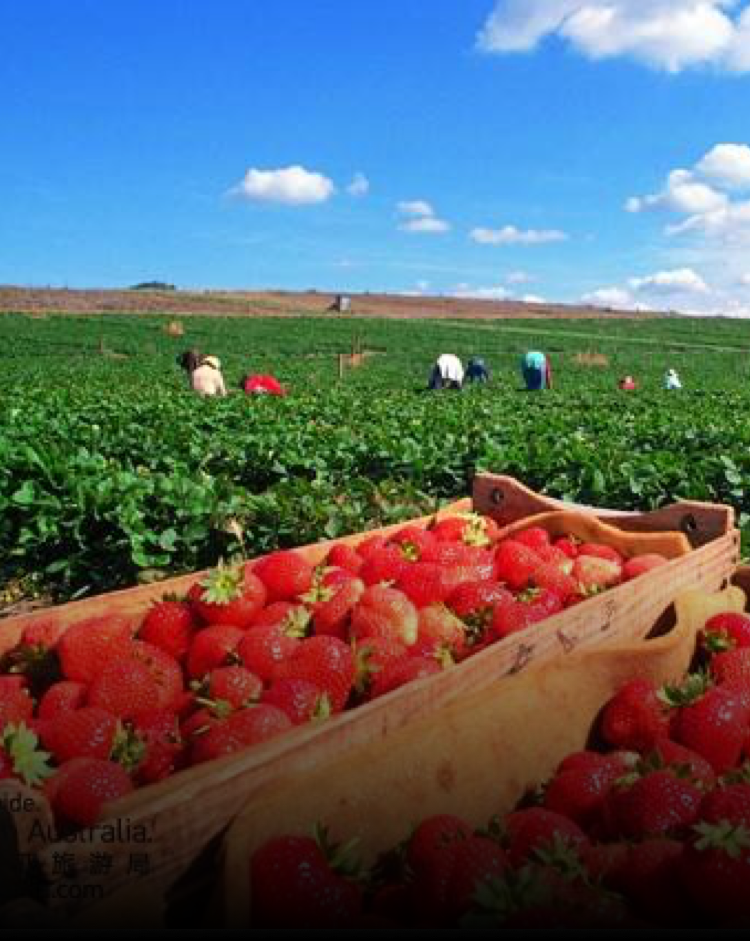

{% extends 'app.nunjucks' %}
{% block title %}蔬游-查看照片{% endblock %}
{% block content %}
<!--头部导航 start-->
<div class="aiui-headbar__wrap">
  <div class="aiui-headbar aiui-headbar__default aiui-headbar__fixed">
    <div class="aiui-headbar__item">
      <a href="javascript:history.back();" class="icon-return"></a>
    </div>
    <h3 class="aiui-headbar__title">查看照片</h3>
  </div>
</div>
<!--头部导航 end-->
<!--内容区域 start-->
<div class="aiui-cells edit-address__cells">
  <div class="aiui-cell">
    <div class="aiui-cell__col">
      <span>生长情况</span>
    </div>
    <div class="aiui-cell__bd">
      <div class="aiui-textarea__group aiui-textarea__disabled">
        <textarea class="aiui-textarea" placeholder="生长状况良好，等待成熟。" rows="3" readonly></textarea>
      </div>
    </div>
  </div>
</div>
<div class="aiui-cells aiui-cells__gap">
  <div class="aiui-cell cell-preview ">
    <div class="aiui-cell__col">
      <span>生长照片</span>
    </div>
    <!--原始图片 start-->
    <div class="aiui-photo__thumb growing-photo__thumb">
      <ul class="thumb-list">
        <li></li>
        <li></li>
        <li></li>
        <li></li>
      </ul>
    </div>
    <!--原始图片 end-->
    <!--图片预览区域 start-->
    <div class="aiui-photo__preview">
      <div class="swiper-container">
        <div class="swiper-wrapper">
        </div>
        <div class="swiper-pagination"></div>
      </div>
    </div>
    <!--图片预览区域 end-->
  </div>
</div>
<!--内容区域 end-->
{% endblock %}
